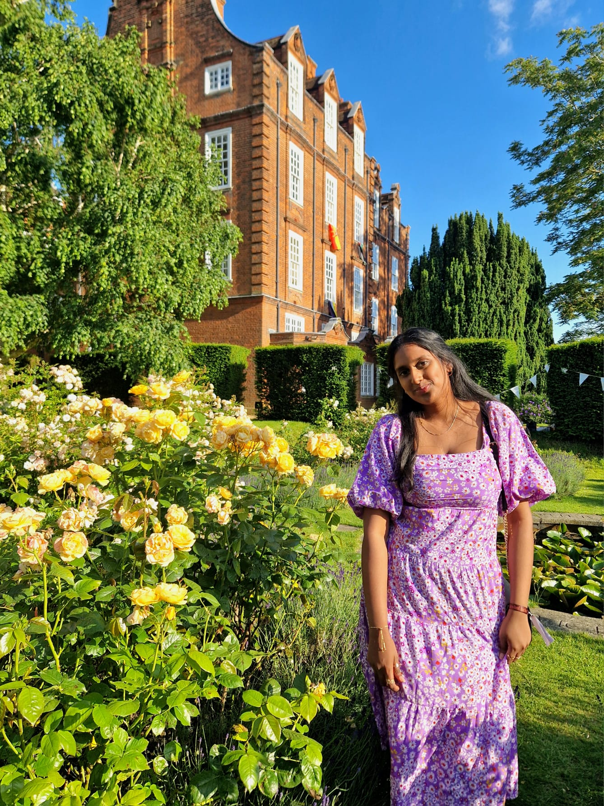

Elisha Oyewole
Massive time waster
and math enthusiast,
but hates maths.
Prime person to blame
Massive time waster
and math enthusiast,
but hates maths.
Prime person to blame
President
Amy Fogarty
Prime coding suspect
Prime coding suspect
Secretary
Tom Downey
100% definitely,
almost a third year.
100% definitely,
almost a third year.
Treasurer

Faustina Das
100% definitely,
almost attends lectures
100% definitely,
almost attends lectures
IT
Tom Truetenare
A class act,
just without the class,
and the act as well, probably
A class act,
just without the class,
and the act as well, probably
Alumni
Rachel Wald
A time waster alike the pres,
except,
she wastes her own time
A time waster alike the pres,
except,
she wastes her own time
Media
Natalie McEvoy
Our newest addition to the committee
and, apparently at least,
trusted with our media content.
Our newest addition to the committee
and, apparently at least,
trusted with our media content.
Media

But we must not forget...
One of the few men
brave enough,
to supervise mechanics
brave enough,
to supervise mechanics
Samuel Grimshaw